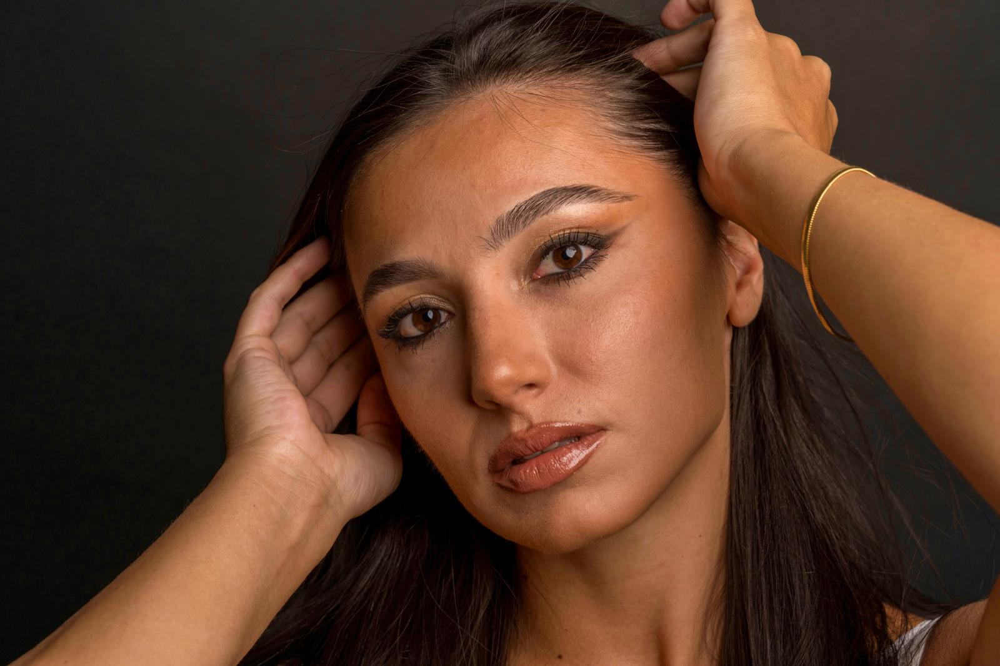
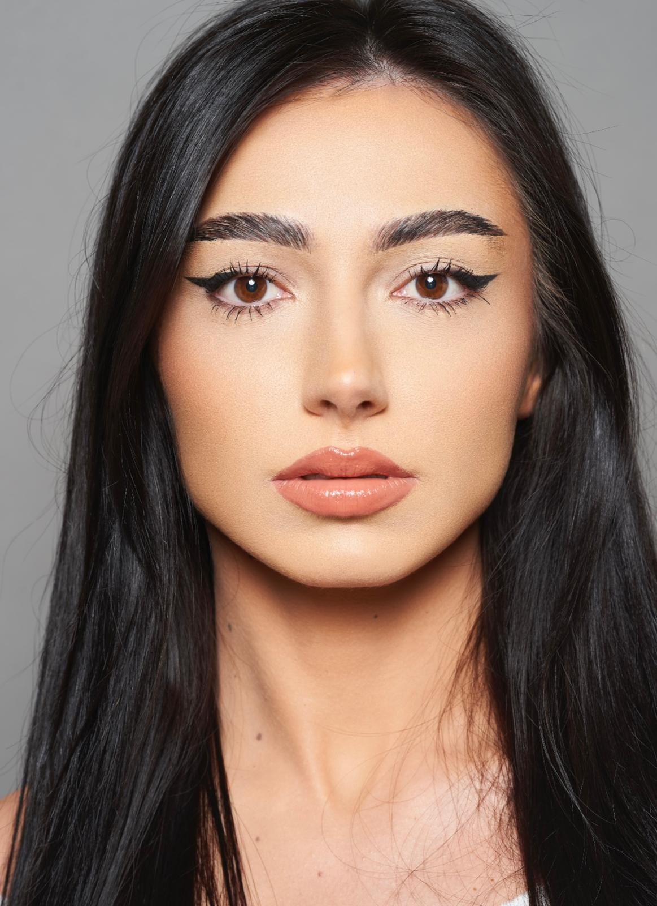
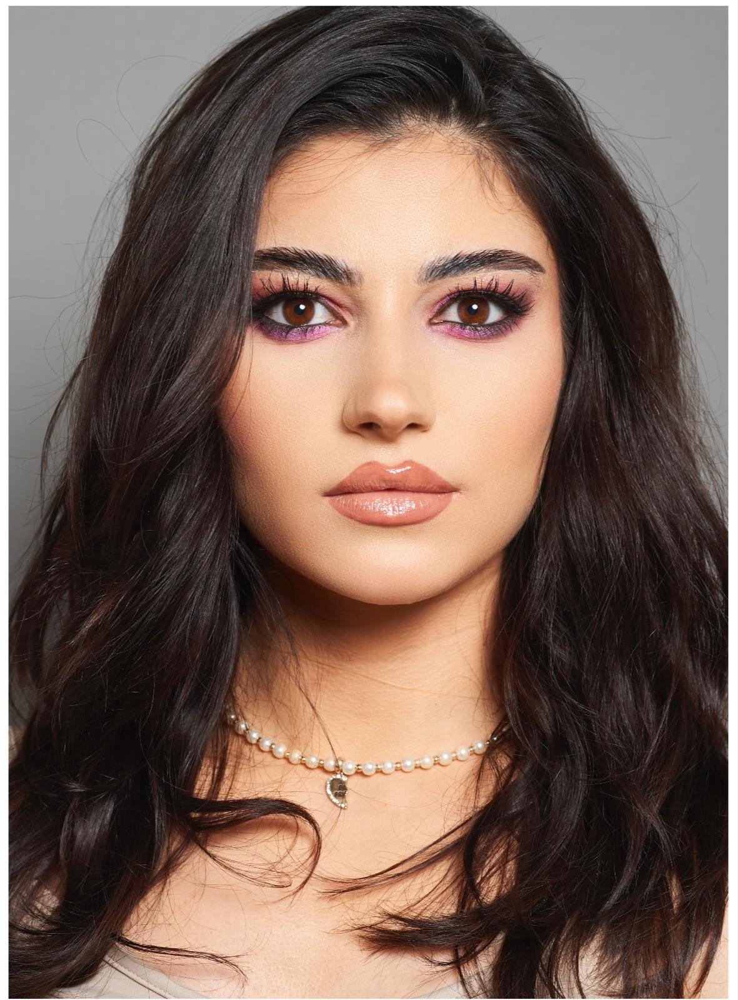
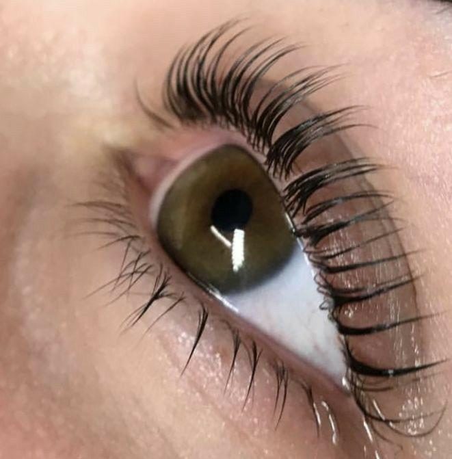
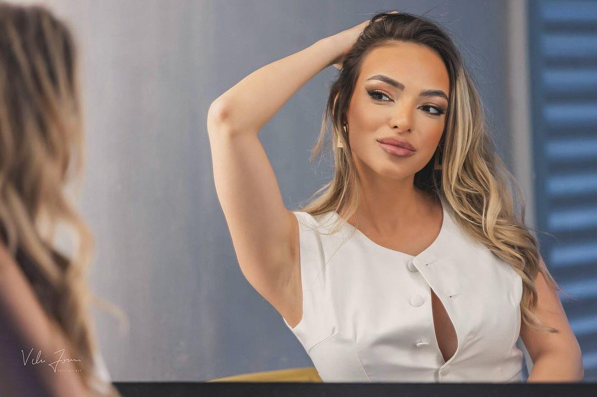
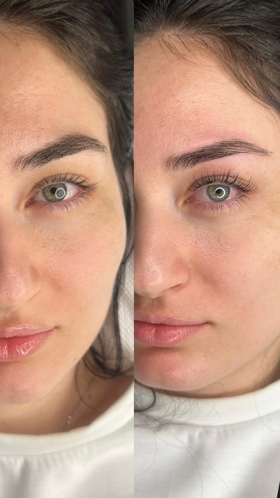
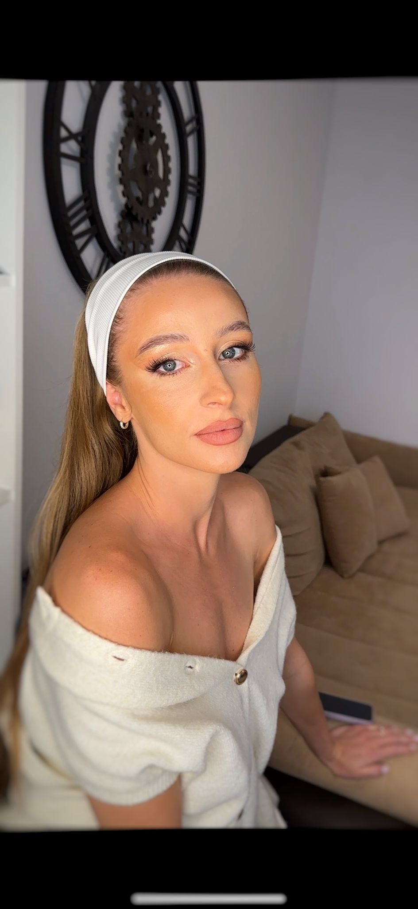
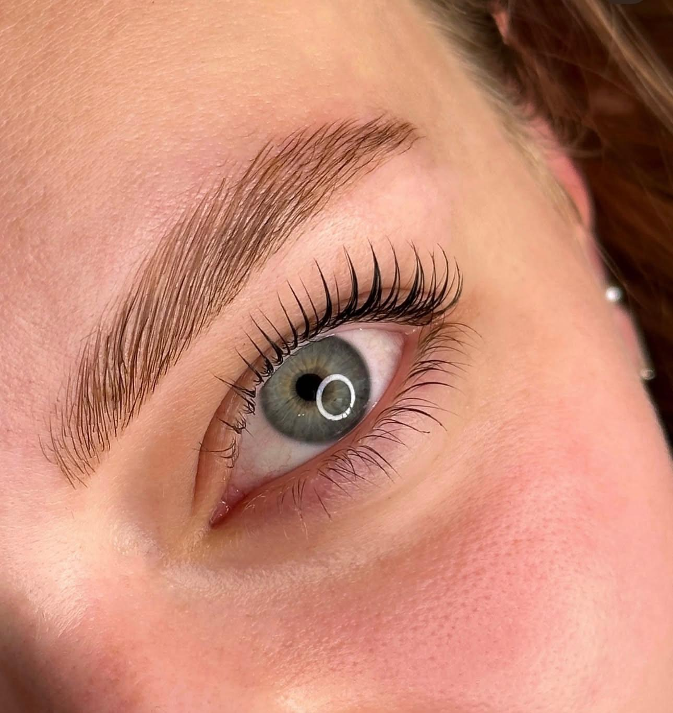
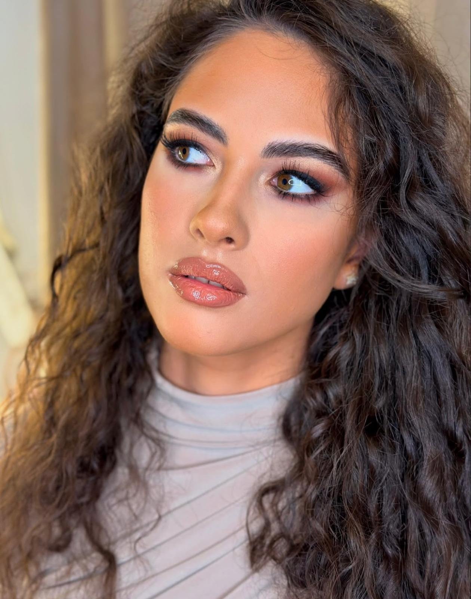
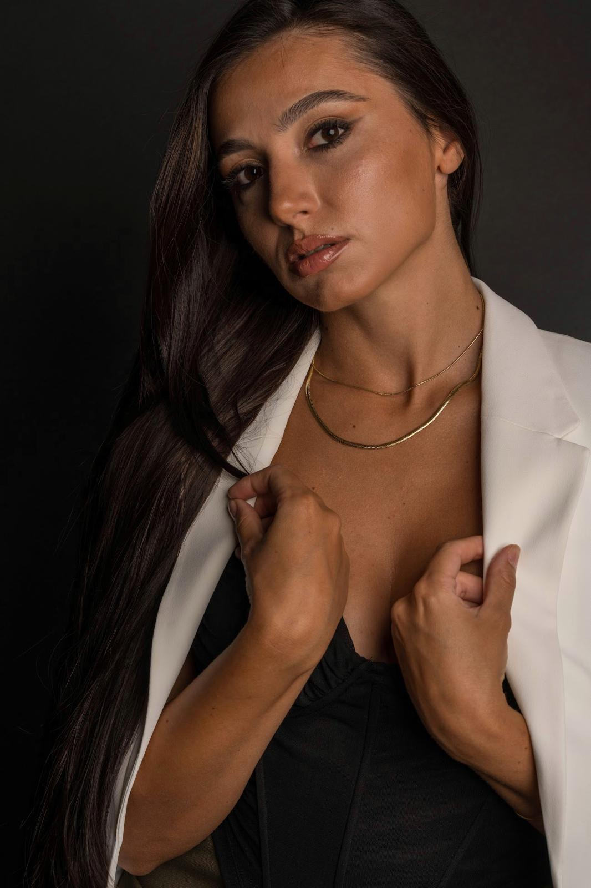

Make-up & Lami Artist
Transformă-ți frumusețea naturală într-o artă. Servicii profesionale de machiaj și laminare gene pentru fiecare ocazie specială.
Vezi mai multDescoperă transformările realizate cu pasiune și profesionalism. Fiecare machiaj spune o poveste unică.








Oferim servicii personalizate pentru a evidenția frumusețea ta naturală
Machiaj personalizat pentru ziua ta specială. Include probă de machiaj și produse de lungă durată pentru un look impecabil.
Lifting și laminare gene pentru un look natural și îngrijit. Rezultate care durează până la 6-8 săptămâni.
Machiaj profesional pentru evenimente, petreceri, ședințe foto sau orice ocazie care necesită un look deosebit.
Modelarea și stilizarea sprâncenelor pentru forma perfectă care îți evidențiază trăsăturile. Include epilare și definire.
Tratament de laminare pentru sprâncene perfect aranjate și definite. Efect de volum și aranjare care durează săptămâni.
Învață tehnici profesionale de machiaj prin cursuri personalizate. Pentru începători și avansați.

Bună! Sunt Florentina Stanciu, make-up artist și specialist în laminare gene cu peste 5 ani de experiență în domeniul frumuseții.
Pasiunea mea pentru artă și frumusețe m-a condus pe acest drum minunat, unde fiecare zi înseamnă transformarea și încredere. Cred că machiajul nu înseamnă să schimbi cine ești, ci să evidențiezi frumusețea ta naturală și să te simți extraordinar.
Am lucrat cu sute de mirese, am fost prezentă la evenimente speciale și am avut privilegiul să văd zâmbete și emoții autentice. Fiecare client este unic, iar misiunea mea este să creez look-uri personalizate care reflectă personalitatea și stilul fiecăruia.
Lucrez cu produse premium și tehnici moderne pentru a asigura rezultate impecabile și de lungă durată. Fie că este vorba de o nuntă de vis, un eveniment important sau pur și simplu dorința de a te simți specială, sunt aici pentru tine.
"Frumusețea este putere, iar zâmbetul este sabia ei." – Charles Reade
Pentru colaborări, programări și informații despre servicii, te aștept pe Instagram unde poți vedea cele mai recente lucrări și transformări.
Urmărește-mă pe Instagram
Pentru a afișa automat postările Instagram, urmează pașii din comentariile HTML de mai sus sau verifică fișierul INSTAGRAM_EMBED_GUIDE.md